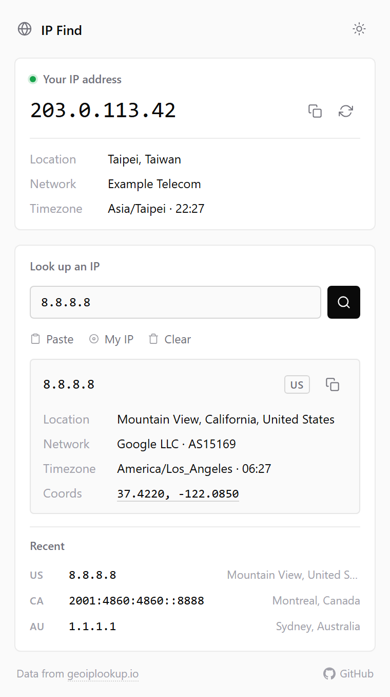

IP Find
Your public IP, and any other IP,
one click
away.
See your own IP
IPv4 or IPv6, with location, network and local time
Look up any IP
ISP · ASN, timezone, coordinates on a map, e.g.
8.8.8.8
Copy, paste, recent lookups
one-click copy, last 6 searches, light and dark theme
https://example.com
